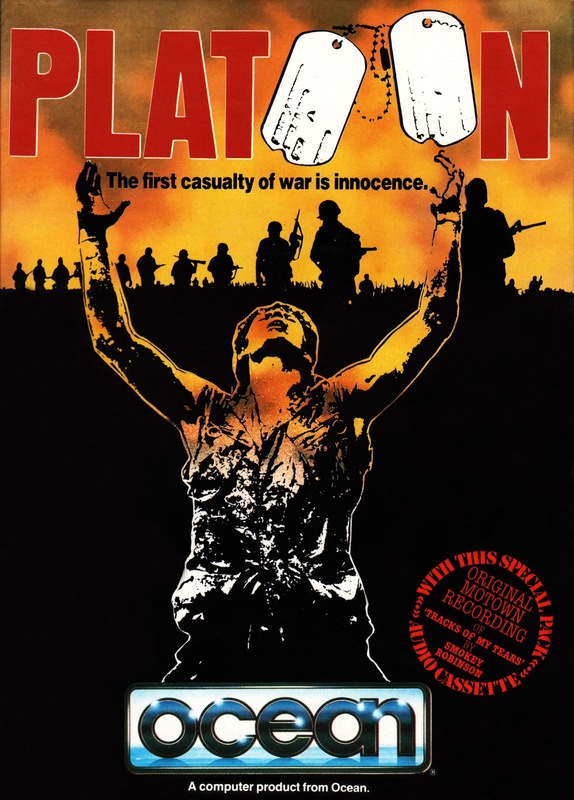
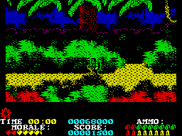

Platoon


{kind=link}

| Publisher: | Ocean |
| Price: | £9.95 |
| Year: | 1988 |
| Source: | CRASH, Issue 50 |

Vietnam — a hellhole where life can be erased by one careless move.
Into the nightmare world of Oliver Stone’s Oscar-winning film (see Film-makers’ Vietnam Victory with this review) steps a unit of American soldiers, some afraid, some just plain crazy, but all unprepared for what they are to find.
In this multisection licensed version of the film, a unit of five must make its way through six sections of Vietnamese landscapes, along jungle paths, secret funnels and mazes, and survive skirmishes in a bunker and a foxhole.
Each soldier carries grenades and a rifle with limited ammunition as he battles his way past hidden snipers, enemy soldiers dropping from trees and foot patrols, trying to avoid concealed booby traps that fill the first section of jungle paths and the Vietnamese village. In this region, the unit must collect a box of explosives and look for a bridge, eventually blowing it up. The soldiers must then make their way to a village, and search huts for a torch and map before entering an underground tunnel network beneath the village.

Besides normal directional movement, each soldier can leap upward and duck down to avoid enemy fire, and enter and leave village huts. When he enters the huts, the walls become transparent, revealing the objects within.
For every enemy plugged by bullet or busted by grenade and object collected, points are awarded, These can be added to considerably by destroying the bridge and booby traps and completing the section with as many men as possible still left alive. Each soldier can take four hits before being listed as killed in action.
But the morale of the unit depends upon how many men have been shot and the number of innocent Vietnamese civilians hit in skirmishes. And if morale falls too low, the unit is lost. By controlling one unit member and then another, the player can maintain morale by avoiding the imminent death of a seriously wounded man in the squad; food and medical supplies can be found and picked up, and are best given to those most in need.
When the entry into the tunnel system beneath the village is found, one soldier can enter. He must be constantly aware of potential enemies, who can suddenly appear brandishing guns or knives from the clammy water through which he wades. When enemies appear, the soldier halts and the player’s control switches to his gun, which is aimed using a cross-haired sight.
After finishing off an enemy soldier, the American GI can move on to scour the rest of the network. A map showing his location is on the right-hand side of the split screen, and following it can lead to rooms. Each room can be searched and any objects found there — such as the box of flares and compass necessary for the next section — examined.
But caution is essential — some interesting crates conceal booby traps.
The tunnels’ exit leads into a large bunker, the next sector of the unit’s mission — the American soldiers are resting here for the night when the enemy Vietcong attack. The unit fires flares high into the night sky, each burst revealing the enemy’s positions.
But the light is only temporary and must be used to advantage by quickly positioning a rifle’s cross hairs on the semihidden enemy and firing.
When the flare dies and darkness falls again, the enemies’ position is only revealed by muzzle flash. And if members of the unit squander their flares and ammunition they become sitting ducks.
As the next day rises, the five GIs are caught in an aerial bombardment of napalm fire — from their own side. Safety must be reached as swiftly as possible. Using the previously recovered compass, unit members must avoid streams of bullets, mines and barbed wire, and take out enemy snipers, to make their way through long tracts of jungle. And the route to safety must be chosen with care: take too long, and all is lost.
The Platoon mission is now nearing its end, but a final stage remains. One of the unit, Sergeant Barnes, has maliciously allowed another Sergeant to be killed by the enemy — and now tries to eliminate potential witnesses by firing on the rest of group from a foxhole. The crazed NCO is well dug in, but the others need that foxhole if they are to survive a napalm assault only minutes away. Machine-gun fire is ineffective against the foxhole, so it must be stormed using grenades, Five direct hits dispose of Barnes and save the platoon.
FILM-MAKERS’ VICTORY VIETNAM
VIETNAM VETERAN Oliver Stone’s Oscar-winning film Platoon, released last May, provided four Ocean programmers with six months’ work as they carefully recreated the environment of Vietnam, war-torn and two decades distant.
Platoon was one of the most highly acclaimed films of 1987, rewarded not only by the critics — earning four Academy Awards (Oscars) for Best Picture, Best Director, Best Film Editing and Best Sound — but also by the American public, which flocked to see how it dealt with a still-sensitive subject.
Previous Vietnam films had included Oscar-winners The Deer Hunter and Coming Home, but both dealt with the war’s effect on veterans rather than the war itself — as, indeed, had the more violent Rambo (which also became an Ocean game).
Platoon tells the story of ‘the Nam’ through the eyes of 19-year-old raw recruit Chris Taylor (played by Charlie Sheen). Director/writer Stone incorporates many first-hand experiences as the teenage soldier tells of his anguish in a series of letters to his grandmother.
As the story unfolds it becomes evident that the soldiers’ worst enemies are themselves. The foot soldiers (or ‘grunts’, as they like to be called) are split between two leaders — the aggressive hard-headed Barnes and the relaxed, and more likable, Sergeant Elias. When Elias is abandoned to the enemy by Barnes, relationships are strained.
So Platoon, filmed in the atmospheric jungle of the Philippines, pushes the fighting to one side and explores the emotions felt by the young soldiers of the decade-long war in which America, which eventually withdrew its forces in 1973, helped defend South Vietnam against the Communist Vietcong of North Vietnam.
The film’s success has prompted Ocean and RCA/Columbia, producer of the video, to join promotional forces. The video is advertised on the game’s loading screen, and the game is advertised on all Platoon hire videos; there’s a competition in the game’s packaging (with videos as prizes); and RCA/Columbia has helped promote the game through video outlets.
CRITICISM
“I thought Ocean could never capture the feel of the film — but the programmers have overcome the problems admirably. It’s all too easy to regard Platoon as a shoot-’em-up and it is to some extent, but if you play with that approach you get nowhere — especially in the first section. Every aspect is superbly done — there’s [no] weak stage that lets the others down, there are no dodgy graphics — and even the packaging is fantastic. Platoon is one of the greatest film tie-ins on any computer.”
PAUL ... 92%
“It’s all too easy to dismiss Platoon as an overrated shoot-’em-up, but though difficulties early in the game can be very frustrating, given practice and sharp reactions Platoon starts to reveal its rewards. The opening jungle stage is littered with traps and hazards to eliminate the novice player, each stage provides a different time-consuming challenge. The graphics are mostly colourful and detailed, the only fault being slightly jerky scrolling. One of the cleverest graphical tricks is on the second stage, when you’ve reached the village: whenever the player enters a hut the walls disappear to show the contents of the peasant abode. It’s simple but effective, And the graphics in the following tunnel stage are particularly impressive. Ocean’s claim that the game, like the film, ‘focuses on the tragedy of war’ is a bit dubious — it’s primarily concerned with success through killing. But Platoon is not to be missed.”
ROBIN ... 91%
“Platoon is well-detailed and highly addictive — but be warned that it’s also extremely difficult. As you complete each stage the graphics get more impressive and the gameplay faster; the tunnel stage is the best, as guerillas armed with knives and machine guns lunge at you out of the swamp slime. The excitement improves stage by stage and this highly colourful and well-packaged game is almost faultless.”
NATHAN ... 95%
COMMENTS
| Joysticks: | Cursor, Kempston, Sinclair |
| Graphics: | Each stage has a tremendous atmosphere of its own, helped by intricately detailed backgrounds and an effective use of colour |
| Sound: | There’s a superb title tune on the 128K version, but the hip-hop in-game tune is inappropriate |
| General rating: | Very playable and very hard — one of the best film tie-ins we’ve seen to date |
| Presentation: | 95% |
| Graphics: | 93% |
| Playability: | 88% |
| Addictive qualities: | 93% |
| Overall: | 93% |